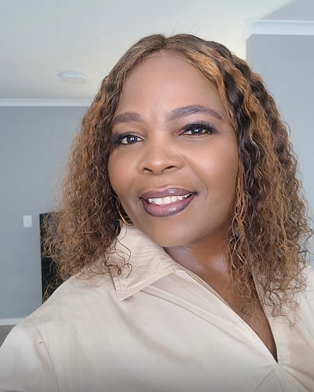
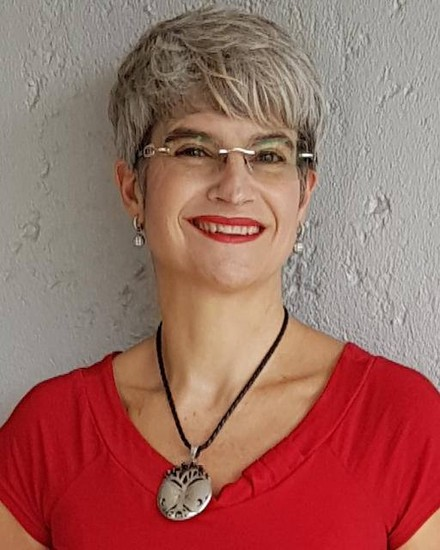
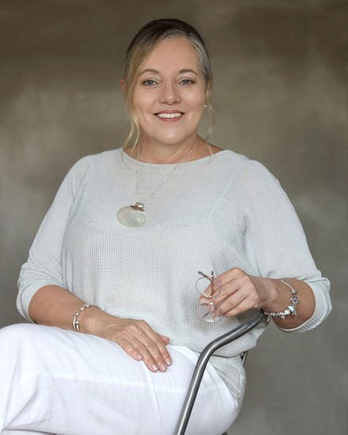

Prepared for Absa Wills and Trust
September 2026
September 2026
Absa has been doing the fiduciary part for a hundred years, and does it properly: the reporting of death, the Master's Office, the letters of executorship, the liquidation and distribution account, R11 billion held under trust. That machinery works, and it is not what this proposal is about.
This is about her. The bank accounts freeze. She signs things she does not understand while people speak to her in a language built for courts. Her children arrive, and then they leave. Three weeks after the funeral the house is quiet, the casseroles have stopped, and she is alone with an estate that will take another ten months to close.
She does not phone anyone. She is not the sort of person who phones anyone. She stops taking her blood pressure tablets because collecting them means driving past the hospital, and nobody notices, because there is nobody left in her life whose job it is to notice.
Everything after this is detail: how we would do it properly, who would be on the other end of the line, and why we think it is worth money to Absa rather than only worth doing.
There is a large and unglamorous body of evidence on what happens to people in the months after they lose a spouse. It is one of the most consistent findings in population health, and the insurance industry has never really acted on it.
The relative risk of death for a surviving spouse in the first six months after bereavement, compared with married peers. It settles to 1.14 after six months, and it does not disappear. The effect is no smaller for people under sixty five than for pensioners.
A separate study of more than 370,000 married couples found the sharpest spike in the first three months. Mortality after bereavement runs through heart disease, stroke, missed medication, drinking, and in the first weeks a suicide rate that is many times the expected figure. None of it is mysterious. It is a person who has stopped looking after themselves because the reason they were looking after themselves has gone.
Line that up against the estate calendar. The riskiest three to six months of a surviving spouse's life sit exactly on top of the months when Absa Wills and Trust is administering the estate. You are the only part of the group with a legitimate reason to be in contact with that person every few weeks. Nobody else in the market has that position, and at the moment it is being used entirely for paperwork.
Mortality on the in force book. The surviving spouse is very often an Absa Life policyholder in her own right, and she has just moved into her highest risk window. Support in that window is one of the few interventions available that touches the claim before it becomes one. Wills and Trust would be paying for it. The benefit sits across the group.
The money that leaves. At the moment of distribution she decides where the proceeds go, and so do the heirs. Families that felt carried tend to stay. Families that felt processed take the cheque to whoever was kind to them, and that decision is made emotionally, months before anyone fills in a form.
Lapses and disputes. Policies lapse in bereaved households because nobody is opening the post. Estates stall because a family has fallen out. Both are cheaper to prevent with a phone call than to fix afterwards.
We work on WhatsApp, on purpose. Nobody downloads an app at eleven at night, and a seventy year old widow will not fill in a web form. The message arrives where she already talks to her grandchildren, from a person, and she can answer in her own time. People who cannot yet say it out loud will very often type it.
Illustrative, but this is the tone and the pace. Real conversations stay between the person and the counsellor. Absa would never see them.
Cover reaches the household, not only the person who signs. Widows, widowers, adult children, minor children and the grandmother who has suddenly taken in three grandchildren. Support runs in English, Afrikaans, isiZulu and isiXhosa, and we find the language somebody wants to cry in rather than the one on the file.
A second marriage and children from the first. A house that one sibling lived in and the others did not. A son who was written out and cannot ask his father why. An objection lodged at the Master that has nothing to do with the law and everything to do with a Christmas in 2011.
Those estates sit. Fees sit with them, the family blames the executor for the delay, and it is Absa that ends up in the middle of a fight it did not start and cannot win. Some of them reach the Ombud. A few reach court, where the estate pays for both sides to lose.
We keep accredited family and commercial mediators on our panel, registered with FAMAC, SAAM and NABFAM. Mediation of an inheritance dispute is voluntary, confidential, usually resolved in weeks rather than years, and costs a fraction of litigation. Crucially it puts a neutral third party between the heirs, which means the executor stops being the target.
We would take the referral from the administrator, approach the parties ourselves, and report back only on whether the matter settled. Absa stays the fiduciary and never becomes the negotiator.
One hard rule we would put in writing. We never touch the estate. Any question about a balance, a beneficiary, a payment date or a policy goes straight back to Absa's own channels, on the same call, with the number. We learned this the hard way running a bereavement outreach programme for another insurer: if a support line starts answering administrative questions it quietly becomes a call centre and stops being a support line.
Not a call centre and not a chatbot. Counsellors, social workers, psychologists and mediators, registered with the HPCSA, SACSSP and ASCHP, working across all nine provinces. Whoever answers at two in the morning is as qualified as whoever answers at ten.



We have been doing this for nine years. We already run bereavement outreach at scale for a large South African life insurer, following funeral claims from the day the claim is paid, and we run standing mental health support for several hundred thousand policyholders and members across the country. This is not a pilot idea we are trying on you.
You will never see what she said. You would receive whether contact was made, whether the case closed, and anonymised trends across the book. Not the conversation. We would not have anything worth having if people thought otherwise, and neither would you.
We escalate when we have to, and we tell you nothing else. Where there is risk to life, statutory protocol applies immediately and we act. Absa is told that an escalation happened, not what was in it.
We take a name, a number, the relationship to the deceased and the date the estate was reported. No financial detail, no estate value, no policy information. Everything is held in South Africa under POPIA.
Your deceased estates team speak to bereaved people all day. They hear a widow cry, they explain the Master's timelines for the fourth time that morning, and then they take the next call. Many of them carry eighty or more live estates, each one attached to a family in the worst year of its life.
Nobody in a fiduciary environment puts their hand up and asks for help, because the culture does not invite it. It comes out instead as sick days, as short tempers with heirs, as errors on files, and as good specialists quietly resigning after eleven years and taking their client relationships with them.
We would cover them on the same terms and with the same confidentiality: structured debriefing for the teams that need it, group sessions built into the roster, and a number their own families can use. Nothing said reaches HR. You would see only whether a team is carrying too much.
It is the part we feel most strongly about, and the part you could start next month without touching a single client record.
Every competitor can match your fee scale, your turnaround time and your century of experience. None of them can match the phone call in week three. It arrives at the exact moment a family decides whether Absa is an institution or a person, and that decision governs where the inheritance lands.
There is no retention like the loyalty of someone you carried through the worst year of their life. A fee gets undercut by lunchtime. That does not.
Start small. One region or one segment of estates, six months, running alongside the administration and referred by hand so nothing has to be built. At the end you will know the contact rate, what families actually asked for, how many disputes we took off your desks, and we can talk about price against real numbers rather than assumptions.
The commercial model sits in a separate annexure, so that this document can be about the work.
We would like ninety minutes to agree what we call about, and which estates we start with.